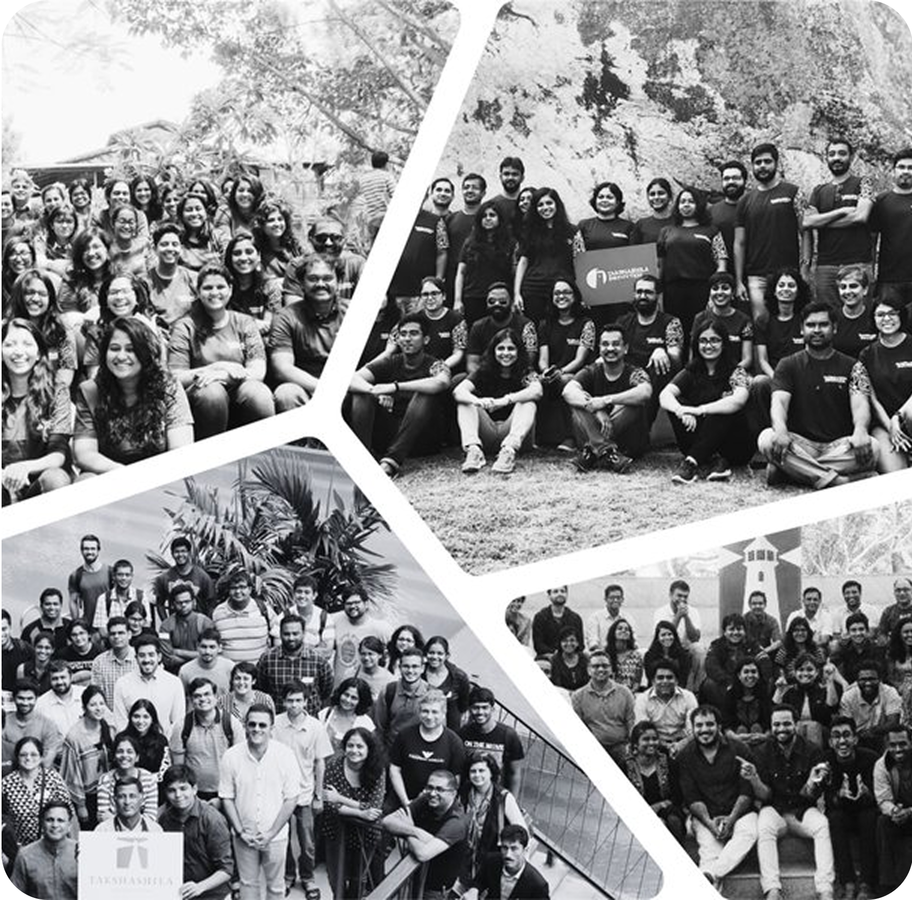

High-Tech Geopolitics Program
The High-Technology Geopolitics Programme explores the geopolitics of technology from an Indian national interest perspective.
About the Programme
Nations are vying for dominance in several critical and emerging technologies such as artificial intelligence (AI), quantum computing, semiconductors, telecommunications, and cybersecurity to gain strategic advantage. Rivalries between major powers are intensifying as they invest in research and development, IP protection, and industrial policies.
Developing countries like India are also striving to enhance their capabilities. The HTG Programme works on navigating these issues while balancing growth, security, ethics, and international cooperation as crucial factors responsible for shaping the future of emerging technologies, and the geopolitics associated with it.
Our work on formulating a Techno-Strategic Doctrine for India lays out imperatives, objectives, and approaches to thinking about technology and strategy.
Our Areas of Focus
China Studies
This initiative aims to understand Chinese domestic and foreign policies, sources of friction, and opportunities keeping in mind Indian national interests, and recommend actionable measures for Indian policymakers.
China's Global Security InitiativeQuad Studies
This initiative aims to study the domestic, bilateral and multilateral engagements among the Quad countries - US, India, Japan, and Australia, and recommend actionable measures for Indian policymakers.
Quad HubDiplomacy and Security
This initiative studies the evolving policies of different actors across the Indo-Pacific. The aim is to recommend pathways for India to strengthen its relationships with like-minded partners, particularly in its immediate geographical neighborhood.
China-Taiwan SagaAdvanced Computing
This initiative is aimed at understanding the geopolitics of high speed and quantum computing, evaluating India's strengths and weaknesses in these fields, and proposing policies to give India an advantage.
India's Quantum EcosystemInformation Politics
This initiative is dedicated to understanding geopolitics in the Information Age. One of the key projects under this initiative is to develop a governance mechanism for digital communication networks, in ways that maximise the benefits and minimise the harms.
Rebooting Artificail Intelligence (AI) in IndiaSemiconductor Geopolitics
Takshashila’s The Siliconpolitik Project tries to answer how do semiconductors play a role in changing the global technology landscape and what role does India have to play in it? Our work spans the semiconductor IC ecosystem, metals and materials used in producing electronics, and the broader electronics ecosystem.
SWOT Analysis of India's Semiconductor EcosystemInterested in Technology Geopolitics ?
Designed for full-time professionals, the GCPP offers a seamless mostly online learning experience. The programme spans 12 weeks and includes weekly webinars (usually on Saturdays). The highlights of the programme include an online Academic Conference and an interactive in-person workshop.

In the News
The most recent posts we have published:
Latest Analysis
Blogs
Satellite Internet Explained: How It Works & Why It Matters
The Proposed Lok Sabha Seat Apportionment—What Should the Southern States Really Demand?
Genomics to Improve Public Health in India
De-risking India's Trade with China
Building Robust Digital Infrastructure for India's Future
Subscribe to Our Podcasts
Latest Videos
Dr. Nithiyanandam on The New Indian Express | India - China talking peace, but preparing for war?
Learn moreDr. Nithiyanandam on The New Indian Express | India - China talking peace, but preparing for war?
Learn more
Dr. Nithiyanandam on The New Indian Express | India - China talking peace, but preparing for war?
Learn moreMeet the HTG Team
Nitin Pai
Nitin Pai is co-founder and director of the Takshashila Institution, an independent centre for research and education in public policy. His current research includes the geopolitics of the Indo-Pacific; defence economics and the politics of radically networked societies.
Learn morePranay Kotasthane
Pranay Kotasthane is deputy director of the Takshashila Institution. Pranay’s current research includes high tech geopolitics and the politics of radically networked societies. Pranay teaches public policy, international relations, and public finance at Takshashila’s graduate and post-graduate programmes.
Learn moreAshwin Prasad
Ashwin is a Research Analyst with the High-tech Geopolitics programme at Takshahsila
Learn moreNarayan Ramachandran
Narayan Ramchandran is one of Takshashila’s co-founders. He worked on Wall Street (mostly at Morgan Stanley) for over 20 years, most recently as head of global emerging market investing and then country head of Morgan Stanley in India.
Learn moreSatya Shoova Sahu
Satya is a Research Analyst with the High-tech Geopolitics programme at Takshahsila
Learn moreAnand Arni
Anand Arni is a Distinguished Fellow at the Takshashila Institution. As a career intelligence officer, he has spent over 25 years specialising in India’s neighbourhood policies. Post-retirement, he continues to focus on India’s western neighbours.
Learn moreLt General (Dr) Prakash Menon
Lt. Gen. (Retd) Prakash Menon is the Director of the Strategic Studies Programme. He is also Professor Emeritus at Trans Disciplinary University (TDU), Bangalore and Adjunct Professor, National Institute of Advanced Studies, Bangalore.
Learn moreAir Marshal TD Joseph
Air Marshal TD Joseph has in-depth experience in strategic and operational planning, flying operations and air defence operations, managing and orchestrating resources worth thousands of crores, heading training of nearly 20,000 personnel every year, and command & leadership. He is a security strategy thinker with a published book (Winning India's Next War: The Role of Aerospace Power, published in 2007) and several articles on aerospace power and international security.
Learn more